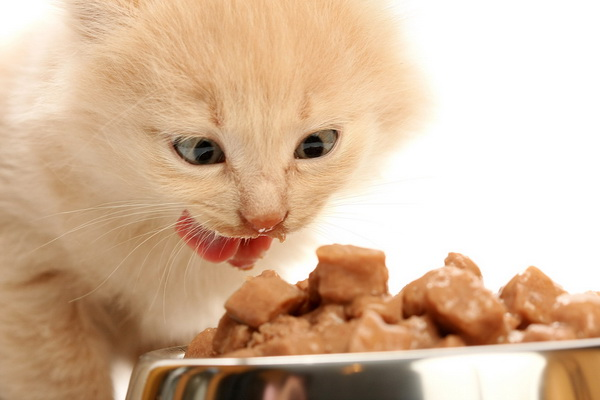

Питание кошек
Вы приняли решение завести дома кошку. Купили переносной контейнер, лоток и наполнитель для туалета, расчёски, игрушки, кошкин домик или постель, когтеточку, шампунь. Вроде бы всё учли, но осталось позаботиться о том, как вы будете кормить питомца.
В магазинах представлено огромное разнообразие сухих и консервированных кормов. Как же сделать правильный выбор? Или может надо кормить кошку обычной едой? Выбор за вами. Я советую комбинировать сухой и консервированный корм с натуральной едой. При выборе сухого корма, отдавайте предпочтение не цветным кормам, корм должен иметь светло-коричневый оттенок.

Чем меньше красителей, тем лучше. Покупайте корма только в заводской упаковке, а не расфасованный по маленьким пакетикам (недобросовестные продавцы могут продать вам просроченный корм). Самыми лучшими сухими кормами считаются PRO PLAN, CAT CHOW, ROYAL CANIN. Это корма высшей категории, в каждой линейке есть корма для котят и взрослых кошек, профилактические и для обычного кормления. Выбирайте тот корм, который наиболее удобен вам по цене. Обязательно покупайте корма, которые помогают выводить шерсть из организма кошки и для профилактики мочекаменной болезни. Давайте специализированные корма через день, чередуя с обычными. Сухой корм должен быть насыпан всегда. Кошка сама съест столько, сколько ей нужно. Консервы можно покупать любые, кошка сама выберет те, которые ей понравятся. Самыми вкусными консервами кошки считают: GOURMET, Friskies, ROYAL CANIN, Kite Kat, DARLING. Лучше всего покупать консервы в пакетиках по 100 г. Удобно кормить, и кошка съедает все за один раз. Если вы насыпали сухой корм, следите, чтобы у кошки всегда была чистая вода в миске, лучше забыть обновить корм, чем воду.
Никогда не кормите кошку едой с вашего стола, во всей нашей еде содержатся соль или сахар. Эти продукты абсолютно противопоказаны кошкам. Соль вызывает мочекаменную болезнь, сахар - диабет и ожирение. Если вы решили комбинировать еду вашей киски, купите мясо говядину, куриное филе и нежирную рыбу. Курицу и говядину порежьте на кусочки 2 на 2см и заморозьте, рыбу отварите в течение 10 минут, удалите кости, порежьте на кусочки и заморозьте вместе с бульоном. Давайте кошке размороженное мясо или рыбу, примерно 100 г в день. 2 раза в неделю полезно дать одно взбитое сырое яйцо. Кошки любят нежирную сметану, натуральный йогурт и молоко. Молоко не заменяет воду, даже если вы налили кошке молока, вода всё равно должна быть в наличии. Полезно давать кошке грызть сырые хрящи. Можно приготовить любой нежирный мясной фарш и добавить в него прокрученные в мясорубке сырые овощи: морковь, шпинат, зелёную фасоль. На 2 части мяса добавьте 1 часть овощей.
Вкусно и правильно питаясь, ваш питомец проживет долгую счастливую жизнь.